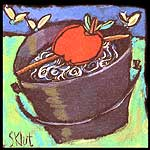
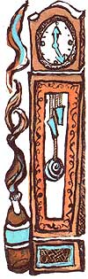

Summer's over, winter's coming. Autumn chores
keep homesteads humming.
HAVE YOU NOTICED THAT YOU ARE more annoyed by pesky wasps, bees and hornets in the fall? Here's a good way to lure them away from wherever you're working or playing or picnicking outdoors. Just fill a pail with water, and across the top tie a piece of fruit coated with lard or grease. Place the pail about 15 feet from the area you want the insects to steer clear of. They'll eat their fill of your snack, be too heavy to fly and will fall into the bucket and drown.
-Don Wood
Elyria, Ohio
Onion Hang-Up
As a native of Georgia, I'm especially partial to that state's famous Vidalia onions. When I stored them the usual way, in a mesh bag, they often spoiled quickly because of high humidity. I found the solution to this was to store them in old, clean hose or pantyhose. You drop the first onion into the toe, and tie a knot right above it. Keep putting in the onions, one at a time and with a knot between each one, till the stocking leg is full. Hang the onions in a cool, dry place, and simply cut one off right below the knot anytime you want one. Onions will keep for a year this way, and they hardly ever sprout.
-Thomas Champion
Radcliff, Ohio
Start Now for Carefree Tomatoes
The work my wife and I do takes us out of town a lot during the warmer months. We particularly enjoy growing tomatoes, but our hot Oklahoma summers make this difficult for those who aren't around to keep the garden watered and weeded. We came up with a system, though, that works great.
In November we till the garden both lengthwise and crosswise. Then we carefully break up bales of field hay so that we end up with two-foot squares about six inches thick. We completely cover the garden with these. In late spring we hand-dig down through the hay and plant the tomato seedlings. The soil stays weed-free and moist, even through 100° days, with only occasional care. In the fall, the hay is tilled under to enrich the soil. Our tomatoes are beautiful, and our neighbors are jealous!
-Woody Morgan
Tulsa, Oklahoma
Snapping Seeds
The next time you cut open a pumpkin, save a few seeds to bait your mousetraps. Mice seem to prefer these over any other food, and they can't nibble at a well-secured seed without springing the trap.
-Gary Gerken
New South Wales, Australia
Time-Tested Remedy
When our antique grandfather clock began regularly losing time, an elderly gentleman's advice put it back in perfect working order. We filled a shot glass with kerosene and placed it in the clock, near the mechanism but out of the way of any moving parts. Slowly, as the kerosene evaporated, it deposited a film on the workings that acted as a lubricant. We replenish the kerosene as needed, and the clock runs smoothly and on time.
-Rob Sporgell
Moylan, Pennsylvania
Thrift-Shop Bagger
My fall leaf raking results in mountains of leaves that must somehow be moved to the compost heap. In searching for something that would make this job easier, I came across an old drapery with an attached lining. After cutting the lining from the drapery at the bottom hem only, I ended up with a huge, sturdy bag. This I placed next to a leaf pile (heavy-fabric-side down), propped wide the open end and faced it into the wind. Since my makeshift bagger held an enormous amount of leaves, it was no time at all before the piles were moved and my yard was neat.
-Marcella Matthews
House Springs, Missouri
Shell Game
I always thought growing and harvesting popcorn was easy compared to the job of shelling it. I've found a way now, though, to make that easy too. The corn is best when the ears are picked two or three weeks after the first hard frost and then dried thoroughly. I take an old, but still tough, pair of blue jeans and tie a knot at the bottom of each leg. I fill the jeans with ears of corn, hold the top closed and pound the jeans against a cement floor. A few hard raps on both sides of the pants, and I can pour the kernels out into a container. This is sure a lot easier on my fingers than the old way.
-Larry Prissel
Durand, Wisconsin
Get Well Soon
When you send a card to someone in the hospital, use the patient's home address as the return address on the envelope. This way, you'll be sure your message is received even if the patient has been discharged.
-Joyce Mason
Westminster, California
Foiled Again
A ball of aluminum foil makes a great pot scrubber for aluminum pans.
-Jeremiah Pierce
Truth or Conseq., New Mexico
|
Illustrations By Meryl Sklut |
 |
 |